John Bacchus Dykes (1823-1876) is,
by far, the single most widely-utilized composer of hymn tunes
represented in Anglophone Lutheran hymnals. Perhaps you
understand why I have put this essay off until now; it's going
to be a long one. I have found almost fifty different tunes by
Dykes in my survey so far.
Dykes
was an English hymn composer who wrote over 300 hymn tunes. His
musical talent flourished early; already at age ten he was
playing the organ at the church where his grandfather preached.
He studied at Cambridge, became an Anglican priest, and served
for a while as choirmaster at Durham Cathedral. Later, while
trying to introduce the high-church movement to his parish, he
got into a scrap with his low-church bishop and appealed to the
church courts for help. The strains of the process and his
ultimate defeat broke his health and led to his death at age 52.
A glance at the titles of Dykes's hymn tunes will show you the
composer's veneration for church history and tradition. The
English church remembers him as a leading composer in the "high
Anglican style," which emphasized a sense of dignity and decorum
while also appealing to the popular sentiments of the time.
Let's cut to the chase and look at his work!
Alford
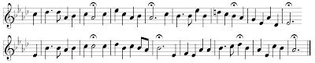
I
have found this tune in eight Lutheran hymnals, wedded to Henry
Alford's hymn "Ten thousand times ten thousand." The text is a
rapturous vision of the saints in glory, and a resolute prayer
for the coming of Christ's kingdom. The tune is a supreme
example of strident, martial pomp and circumstance, with overt
and sutble similarities to
Webb ("Stand
up! stand up for Jesus"). It makes me think of marching bands.
Almsgiving
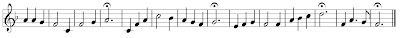
Every
verse of Charlotte Elliot's hymn "My God and Father, while I
stray," ends with the refrain "Thy will be done." Horatius
Bonar's hymn "Great King of Kings, why dost Thou stay" has the
refrain "Thy kingdom come." Both hymns have been set to this
tune in at least one Lutheran hymnal. Meanwhile three books pair
it with "O Lord of heaven and earth and sea," a stewardship hymn
by Christopher Wordsworth whose stanzas end with variants on
"Who givest all." Among the handful of tunes that fit the metre
of these hymns, I don't think
Almsgiving is
the most successful. The rhythm of the last phrase strikes me as
the chief weakness of this tune.
Arundel
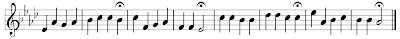
This
modest, quiet, perfect little tune deserves a revival. Several
hymnals made use of it up until the 1950s, but it has slipped
into undeserved obscurity since then. Texts that have enjoyed
this tune's company include "Hark! a thrilling voice is
sounding"; "May the grace of Christ our Savior"; "Praise the
Lord! ye heavens adore Him"; and "Savior, breathe an evening
blessing."
Beatitudo
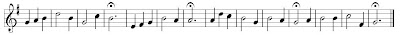
All
the Missouri Synod's Anglophone hymnals, plus the most recent
WELS hymnal which toadies them, have paired this tune with
Charles Wesley's hymn "O for a thousand tongues to sing."
Because of my LCMS background I can't help regarding this as an
indissoluble marriage of text and tune. However, other hymnals
have used this tune with "Behold us, Lord, a little space";
"Jesus, exalted far on high"; "Jesus, my Lord, how rich Thy
grace"; "My God, how wonderful Thou art"; and "Thou art the Way;
to Thee alone". None of these pairings have lasted beyond one or
two hymnals, though. So I maintain that this tune stands or
falls with Wesley's hymn.
The cento published in
The Lutheran Hymnal seems
to be a fine hymn of redemption in Jesus' blood and of
justification by grace through faith, expressing this message in
simple, straightforward terms. Perhaps others are more alert
than I to suggestions or associations in this hymn that would
disqualify it for Lutheran use. For my part, I would not object
to using this text and tune together.
Dies Dominica
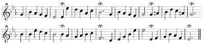
I
found this tune paired with "O bread to pilgrims given," the Ray
Palmer translation of a Communion hymn elsewhere given as "O
Bread of life from heaven." The hymn might be serviceable,
though you have to look hard to find anything in Palmer's text
that a Real-Presence-denying Reformed Christian would reject.
The tune, however, is far too bland and unmemorable to do it any
good.
Dies iræ, dies illa
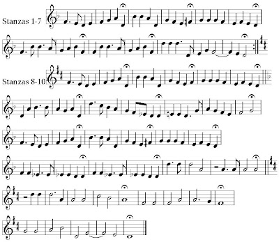
This
monster is Dykes's setting of "Day of wrath! that day of
mourning," a fearful prayer for deliverance in the hour of
judgment which the Lutheran church has adopted from the Roman
Catholic Mass for the Dead. The original Latin text, like many
of its translations, has an unusual pattern of rhyming lines
grouped in threes, and it covers a wide emotional range.
Clearly, Dykes sought to dramatize this.
The other hymnal settings of this hymn include a three-phrase
hymn tune, a nine-phrase plainchant, and Ludwig Lindeman's
similarly through-composed setting that is, nevertheless, more
compact than this one. Dykes's setting stretches the definition
of a hymn tune almost into the realm of cantata. It ends up
being an awful lot of notes for a congregation to navigate
through, and frankly, it isn't as effective as the alternate
settings. I would not object to a choir singing Dykes's version,
but it is the last tune I would ever choose to give the
congregation.
Dominus regit me
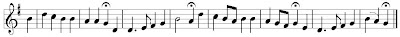
In
at least five Lutheran hymnals, this is the tune for "The King
of love my Shepherd is," a metrical paraphrase of Psalm 23.
Since the tune's title is the opening of Psalm 23 in Latin, I
fancy that is the text Dykes had in mind when he composed it.
Several other tunes have also enjoyed a connection with this
hymn, of which
St. Columba has
most recently emerged as a leader. While
Dominus
regit me might be an OK alternate tune, I
doubt it would ever be used. It simply doesn't have the charisma
to compete with
St. Columba. Meanwhile,
Dykes's tune has also been paired with "The Lord is near! why
should we fear," suggesting that there may be life for it after
Psalm 23. I would expect to see a tune like this in a section or
book of children's hymns.
Ecce panis
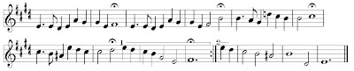
This
beautiful, warm, devotional tune goes with "Very Bread, good
Shepherd, tend us," a Communion hymn translated from Thomas
Aquinas. This hymn is either in one long stanza, or in two
stanzas but with a whole different ending the second time. Plus,
the music is quite sophisticated as compared to the average
hymn. So I regret to say this song belongs more in the choir
portfolio than in the hymnal. The congregation would spend all
their time stumbling over the beautiful surprises of this
melody, and never really learn it before it was over.
Elvet
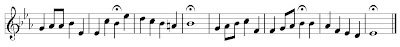
This
earnest, attractive, well-written tune appeared with the hymn "O
Lord, my best desire fulfill" in the music edition of the
Evangelical
Lutheran Hymn-Book. Transposed down a step or so, it could
be useful for a variety of hymns in the Common Metre.
Etiam et mihi
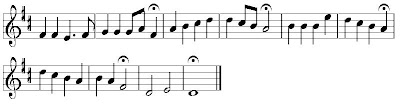
Each
stanza of Elizabeth Codner's hymn "Lord, I hear of showers of
blessing" ends with the refrain: "Even me." Not only does this
explain the title of this tune, but it also sets a revivalistic,
individualistic, decisionistic tone of inviting God and His
blessings into my heart. This doesn't seem very helpful to the
Lutheran church culture emphasizing corporate worship, the Means
of Grace, and man's passive role in conversion. Perhaps this
tune can be redeemed by association with a better text. Would it
be worth the trouble? I would lay odds at 50-50.
Ferrier
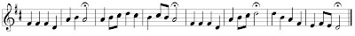
This
simple, pleasant, unremarkable little tune could just pass as a
hymn for children. It is in this capacity that it appears, in
three hymnals, set to the text "Savior, teach me day by day." By
the way, one hymnal adds a passing-note (G) at the end of the
second phrase.
Gerontius
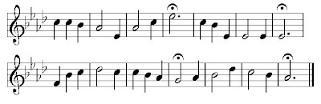
Dykes
wrote this tune to go with the hymn "Praise to the holiest in
the height," an excerpt from John Henry Newman's poem
The
Dream of Gerontius. I have found better tunes matched to
this hymn.
Gerontius is
stately, almost to the point of pompousness, unevenly inspired,
and a little awkward here and there. Another text this tune has
served is "Welcome, Thou Victor in the strife."
Glebe Field
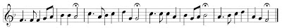
Charles
Wesley's children's hymn "Gentle Jesus, meek and mild" suits
this tune well. It is a gentle and innocent melody, though
perhaps a little arbitrary-sounding without the harmony. Not
altogether without tricky bits, it might be a rewarding
challenge for your children's choir. On the other hand, are you
ready for the spiritual trial of teaching the children a hymn in
which the phrase "Fain I would" appears more than once? On a
more objective, doctrinal level, Wesley's text emphasizes
sanctification and uses Jesus as an example. These tendencies go
nicely with the moralistic tenor of most children's hymns. But
we might do better to teach our kids songs about God's grace,
love, and mercy in Jesus.
Hollingside
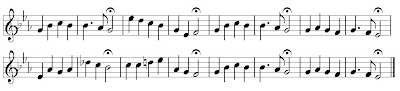
This
may be the most colorless of the three tunes associated with
"Jesus, Lover of my soul" - notwithstanding the inert
Martyn.
It is well-structured, learnable, and even vaguely touching in
its gentle serenity; but it is not particularly memorable.
Nevertheless, four Lutheran hymnals have tapped it for Wesley's
popular hymn of trust in God's mercy. The tune has also been
paired with "Father, be Thy blessing shed" and "When along
life's thorny road."
Horbury
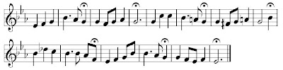
This
tune is one of a whole genre of tunes written to go with the
hymn "Nearer, my God, to Thee" - or rather, with the several
texts that begin with the same first line and, no doubt, are
intended to be confused with one another. The version I found
set to this tune was Henry Eyster Jacobs's "word and sacrament"
spin on the old, revivalistic favorite. Personally, I question
whether tampering with such texts is really worthwhile.
Still, anything would be better than the approach taken by the
editors of
The Lutheran Hymnal (1941),
who after surveying the many options simply threw up their hands
and went with the original camp song, theological warts and all.
This hymn is a cancer that must be cut out of the Lutheran body
for its own good; and whether Jacobs's version is an improvement
or a concession to the popular rage, it ends up being merely a
"foot in the door" for Sarah Flower Adams's singularly
Christ-less, sentimental, uncertain, decisionistic, and
pietistic, original hymn. As for Dykes's tune, pretty as it is,
it won't be missed.
Hosanna
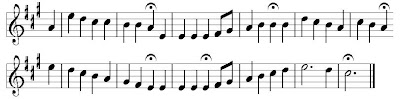
Two
books paired this fairly dull stick of pomp and circumstance
with Reginald Heber's hymn, "Hosanna to the living Lord," adding
to each verse the redundant refrain: "Hosanna, Lord! Hosanna in
the highest!" This is not Dykes's best work. I prefer singing
this hymn to
Vom Himmel hoch.
Jesu Magister Bone
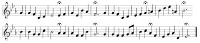
John
Ellerton's hymn, "The hours of day are over," has been set to
this well-written tune, which owes much of its effectiveness to
its rich, warm harmony. It has a yearning, twilight sound that
might do great credit to your church choir at the end of a
Vespers service, but as a singing tune that a congregation could
learn and remember it leaves much to be desired.
Keble
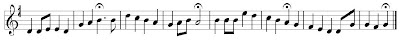
The
tune is named in honor of English poet and Oxford movement
luminary John Keble, but the text I found paired with it
("Almighty Father, heaven and earth") isn't by Keble.
Nevertheless, this is an appealing, honest tune just waiting to
light up a Large Metre text.
Laud
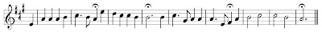
In
one hymnal, this tune is paired with Isaac Watts's hymn "Come,
let us join our cheerful songs," which I have elsewhere found
more happily paired with
Nun danket all.
In another book,
Laud is one
of
three tunes chosen for "All
hail the power of Jesus' name." Jammed between William
Shrubsole's
Miles Lane and
Oliver Holden's
Coronation,
Laud seems
very pale indeed. Either of those alternate tunes could come to
mind when this hymn is mentioned, but no one thinks of
Laud.
To be sure, it's a dignified and attractive tune, though best
appreciated in full harmony. It simply doesn't impress itself on
the mind as the Shrubsole and Holden tunes do.
Lux benigna
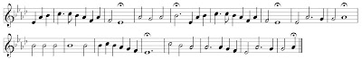
Here
is another tune for a hymn by Catholic mystic John Henry Newman:
"Lead, kindly Light," found in three Lutheran hymnals of the
past century. This combination of text and tune reminds me of
the marriage of "Be still, my soul" and
Finlandia by
Sibelius. Both have the same feminized phrasing, the same
atmosphere of intimate, personal devotion, and the same tender
glow of subjective sentimentality. They are both very lovely
pieces that a choir might sing beautifully, but that sound silly
when sung by the average congregation.
The Newman poem is interesting in that it never explicitly names
the entity it addresses; things only come into clear focus when
the speaker confesses his own spiritual ailments, if even then.
One gathers that the final stanza speaks metaphorically of
death; it's hard to guess what else it might mean. Frankly, I
think Lutherans should leave hymns like this alone. They may
ignite a warm glow of sentimental feelings in our hearts, but do
we really know what we're singing about?
Melita
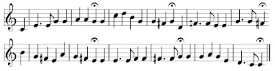
Also
known as
Navy Hymn, this tune is widely
associated with the William Whiting hymn "Eternal Father, strong
to save," whose stanzas famously end with a plea "for those in
peril on the sea." More recently stanzas have been added
petitioning for each of the other armed forces. This can make
services of prayer in a time of war a bit tiresome, since nobody
can stop until every branch of the military has been recognized.
The tune's celebrity is well deserved. It is a magnificent
specimen: warm, graceful, and dignified, and full of
interesting, memorable features. Other texts associated with
this tune include "Creator Spirit, by whose aid"; "Dear Lord, to
Your true servants give"; "How fair the church of Christ shall
stand"; "When streaming from the eastern skies"; and, in no
fewer than four hymnals, "My hope is built on nothing less."
Nicaea
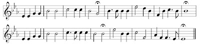
The
marriage between this tune and Reginald Heber's hymn "Holy,
holy, holy, Lord God Almighty" seems to be universally
recognized. How many Lutheran hymnals use this pairing? All of
them. It is one of the best-known hymns in English-speaking
Christianity, and I know of no other tune it has been set to. A
pastor can confidently select this hymn for a chapel service at
a hospital, nursing home, or military base and expect people of
all denominational backgrounds to know it. The tune is a paragon
of slow-good, Romantic pomp and circumstance that can be adorned
with full organ accompaniment and instrumental or choral
descants (one hymnal even includes a descant for it). For all
its familiarity and catchiness, people still stumble a little
over the slight difference between the first and third phrases.
Pax Dei
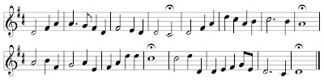
I
didn't like this tune at first, but I'm beginning to come
around. It's an interesting and attractive piece, and when
paired with "Draw nigh and take the body of the Lord," it saves
the tune
Old 124th (which,
properly speaking, has five phrases) from being butchered to fit
this text.
Another hymn set to this music is "O God, I love Thee; not that
my poor love," E. H. Bickersteth's translation of a Latin poem
(possibly by Francis Xavier) which, in turn, was allegedly
translated from a Spanish hymn. This is an interesting text, and
I would welcome discussion of it. It says the cross of Christ is
the crucial expression of God's love, and the true basis for our
love of God. But it may say more than that: it may also mean
that a true Christian's devotion to God must not be motivated
chiefly by the fear of hell or the hope of heaven - which, some
might argue, sets God-pleasing faith out of the reach of any but
the most exceptionally devout Christian. Look it up in
Service
Book & Hymnal 489, or
Common
Service Book 58, and let me know what you
think!
Requiescat
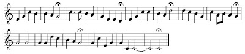
This
is an alternate tune for "Now the laborer's task is o'er," the
funeral hymn (with an alternate ending for burials at sea) that
was also set to Barnby's tune
Hebron. At
the outset it seems a nice tune, but the ending is rather
strange. Should you try to hum it to yourself, it might help to
know that the last two phrases carry the refrain: "Father, in
Thy gracious keeping Leave we now Thy servant sleeping."
Rivaulx
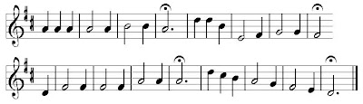
Oh,
what a boring tune! And yet it has snagged three different
hymns: "Father of heaven, whose love profound"; "O Love, how
deep, how broad, how high"; and "With broken heart and contrite
sigh." Better tunes for each of these hymns immediately come to
mind, respectively:
Angelus,
Deo
gracias, and Jeremiah Clarke's
St. Luke.
Sanctuary
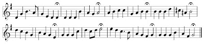
The
tune for Francis Scott Key's hymn, "Lord, with glowing heart I'd
praise Thee," is not altogether to my taste. Dressed in its full
harmony, it takes Romantic sentimentality to a theatrical level.
However, I have to admire the clever structure of the melody,
which makes maximum use of a minimum of material. It's a
well-crafted tune that, in today's ears, would probably sound as
dated as a sepiatone photograph. Another text I've found set to
it is "Hark! the sound of holy voices."
Shoreham
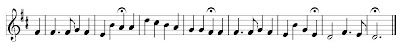
Godfrey
Thring's evening hymn, "The radiant morn hath passed away," is
set to this tune in the old
Lutheran Hymnary.
It succeeds where
Almsgiving came
up wanting. The challenge for any tune in this metre rests on
the effectiveness of its brief, final phrase. Though Shoreham's
last four notes are nothing special in themselves, they emerge
naturally and conclusively from the preceding phrase and
highlight the charm and clean-cut structure of the whole melody.
The same could be said for Thring's poetry.
St. Ælred
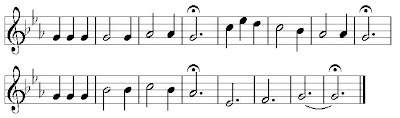
Godfrey
Thring wrote a very effective hymn based on the story of Jesus
stilling the storm; this is Dykes' tune for it. Modest and
simple in its dimensions and material, it somehow conveys both
drama and peacefulness, urgency and trust. Few tunes communicate
so much with so little melodic activity; the harmony, indeed,
plays an important role. This is the ideal hymn for the Fourth
Sunday after Epiphany, where the lectionary contains this story.
St. Agnes
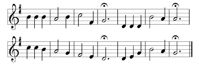
The
hymns "O Jesus, King most wonderful" and "Jesus, the very
thought of Thee" are each set to this tune in five Lutheran
hymnals. Other hymns that have imbibed this tune's gentle joy
include: "Come, Holy Spirit, heavenly Dove"; "Father of mercies,
in Thy word"; "Jesus, Thou art my Righteousness"; and "Lamp of
our feet, whereby we trace."
St. Anatolius
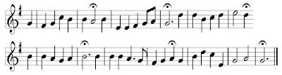
This
tune is named after St. Anatolius, who wrote the hymn "The day
is past and over" in the 8th century. Four hymnals, including
the
Common Service Book, set this hymn to
the tune St. Anatolius by A. H. Brown. The same-named tune by
Dykes appears only once in Anglophone Lutheranism, also in CSB,
as an alternate tune for the same hymn. The reason Brown's tune
gets more play is that, frankly, it's better. Dykes's go has a
nice harmonic plan, but the melody sounds strange and
incoherent, like the output of a random musical phrase
generator.
St. Andrew of Crete
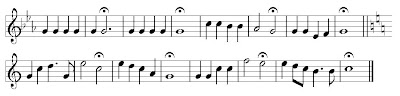
Two
hymnals (CSB and SBH) pair this tune with St. Andrew of Crete's
hymn, "Christian, dost thou see them." Nice how that works out,
eh? CSB offers Josiah Booth's
Holy War as
an alternate tune. Both tunes, like Dykes's own
Vox
dilecta, switch from the minor to the major key halfway
through - an effect that suits the text, in which each stanza
begins with warning and ends with promise. However, Dykes's tune
is destroyed by its obsessive monotony - two whole phrases of
the same note - reminiscent of the worst of Joseph Barnby.
Holy
War is somewhat better, but neither tune holds
a candle to the alternate tune in SBH,
Gute
Baeume bringen. If this hymn is suitable for use in the
Lutheran church - a question I am willing to discuss - it is
this last tune that I would recommend for it.
St. Bees
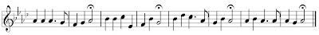
Sometimes
I wonder why Dykes was so determined to generate maximum melody
out of a minimum of notes. Perhaps it had something to do with
betting at the pub across from the cathedral. For whatever
reason, he seems to have kept experimenting with phrases that
contain only two or three pitches, like the first and last
phrases of
St. Bees. Fortunately, this
tune opens up in the middle, like a bud in springtime. It does
no harm to the hymns "Jesus! name of wondrous love" and "Lord,
to whom except to Thee." I suppose it would work nicely with any
available tune in the 7777 metre.
St. Cross
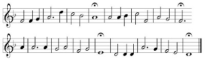
I
often think that Dykes and Isaac Watts were kindred souls. It is
to Watts's Maundy Thursday hymn, "'Twas on that dark, that
doleful night," that this tune is most happily wedded. It also
has affinities to other passion and confession hymns, such as:
"O come, and mourn with me a while"; "'Tis finished! so the
Savior cried"; and "With broken heart and contrite sigh." The
tune is solemn, deliberate, and reverent; but best of all its
beauties is that it avoids sentimentality.
St. Cuthbert
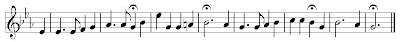
The
first three phrases of this tune give one the impression of a
fairly ordinary, but sturdy, little tune. The last phrase spoils
it with its inconclusive conclusion, giving the whole melody the
sound of something weak and ineffective, like a faded and
wilting nosegay. Harriet Auber's Pentecost hymn, "Our blest
Redeemer, ere He breathed," is somewhat of the same character:
soft, delicate, vaguely sentimental, and essentially colorless.
The pattern that I see emerging shows that Dykes had the gift of
matching his music to the style of each text; unfortunately, he
did not show much discernment as to which texts to treat.
St. Drostane
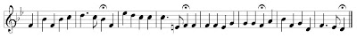
In
the race to become psychologically wedded to Henry Milman's Palm
Sunday hymn, "Ride on! ride on in majesty," this tune runs neck
neck-and-neck with
Winchester New. Please
forgive the irresistable pun. Meanwhile, another tune (
The
King's Majesty) written specifically for that hymn has
turned out to be so unpopular that the new hymnals are
"scratching it" and going back to the old favorites.
You may be surprised to know that TLH was the only hymnal before
the 1990s to favor
Winchester New for
"Ride on." So, from a pan-Lutheran perspective,
St.
Drostane is the chief tune for this hymn. And
in my opinion, it deserves to be revived. It is an interesting,
strong, dignified, memorable tune with a strong attachment to
this text. Meanwhile,
Winchester New has
served at least 10 different hymns!
St. Godric
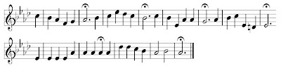
This
is an adequate tune in the Hallelujah Metre (6666 88) which has
served a variety of texts, including: "Arise, my soul, arise";
"Author of life divine"; "On what has now been sown"; and "The
atoning work is done." I daresay there are HM tunes that move
along with a bit more energy, but this one is pleasant enough.
St. John
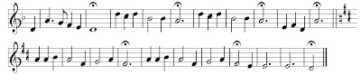
This
tune, also known as
Ecce Agnus, should not
be confused with the unattributed tune of the same name (also
known as
Adoration), which is in HM. The
Dykes
St. John has been
paired with Matthew Bridges's Passion hymn "Behold the Lamb of
God," elsewhere (and more happily) set to another
Ecce
Agnus which, in turn, is adapted from an old
Christmas chorale called
Wir Christenleut.
A diagram would help, but I don't have time to draw one. So,
just take my word for it: any other tune mentioned in this
paragraph is superior to
St. John by
Dykes. Though it is a memorable enough tune, it is also
theatrical to the point of awkwardness, using changes of metre
and key (minor to major) to express the drama of the text at the
expense of the congregation's ability to sing it.
St. Mary Magdalene
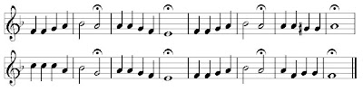
Three
hymnals pair this tune with "In the hour of trial," a touching
Moravian hymn with a rare theology of the cross. The WELS hymnal
interestingly places this hymn in its Lenten section; I think it
could also serve as a hymn for children, whose lives (as we all
know) are not all sweetness and joy. The tune is simple and
well-structured, with a subdued feeling; one might even speak of
blandness, but I would rather stick to "subdued feeling."
St. Oswald
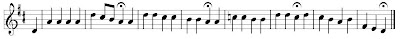
This
is a bright, energetic, classical-sounding tune that I have
found paired with "Here in Thy name, eternal God" and "O Christ,
our true and only light." It comes complete with one of those
"Anglican twist" effects in the third phrase, which can do a lot
to popularize a simple tune like this.
St. Oswin
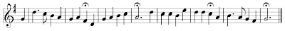
The
Evangelical Lutheran Hymn-Book pairs this tune with a verse
paraphrase of the Gloria in excelsis, "To God be glory, peace on
earth." In a more indirect way, the same book also links
"Through all the changing scenes of life" to this tune. It is a
mildly interesting, pleasant tune that shouldn't be too
difficult for the average congregation to learn.
St. Werburgh
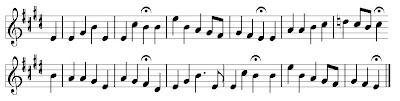
This
tune is reminiscent of Dykes's own
Elvet,
but not as good. Once paired with "O Lord, whose bounteous hand
again," it is a bright, dignified, but uninspired tune that
seems to go nowhere in particular. This impression is reinforced
by one serious structural gaffe: the "Anglican twist" comes far
too early in the tune, with the result that tune seems to
"fizzle out" over the three subsequent phrases.
Strength and Stay
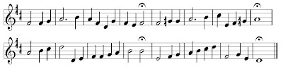
This
tune was written for the Latin hymn "O Strength and Stay
upholding all creation," attributed to St. Ambrose. I found this
text-tune pair in at least two Lutheran hymnals, where it serves
as a prayer that the unchanging God would guide us through
life's changes. Other texts paired with this tune include "O God
of light, Thy word, a lamp unfailing" and "We are the Lord's."
Though no Lutheran hymnal sets it to this tune, the wedding him
"O perfect Love" was written with it in mind. It is a noble,
handsome tune that has not been heard much lately. I would be
interested to hear it given another try.
Thanksgiving
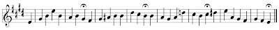
Not
to be confused with the same-named tune by Walter S. Gilbert,
this very attractive and interesting tune has rubbed up against
a number of hymns, including: "Come, Holy Ghost, our souls
inspire"; "My Hope, my All, my Savior Thou"; "O Light, O Trinity
most blest"; "When Israel through the desert passed"; and "Where
cross the crowded ways of life." If you hum the melody alone,
you may recognize in the third phrase what I call the "Anglican
twist" (V/IV-IV in the notation of harmonic analysis), a
familiar gesture in high-Anglican music that is often very
effective. The real surprise comes when you hear the harmony, in
which this phrase goes farther afield than you expect.
Veni Creator
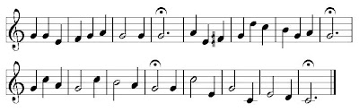
The
Common Service Book gives this as one of three tunes for "Come,
Holy Ghost, our souls inspire," complete with a two-phrase coda
to be sung after the last stanza. It's a nice enough tune,
though I think the plainsong
Veni Creator
Spiritus, or the chorale
Komm,
Gott Schoepfer derived from it, is more than
adequate for this hymn. Perhaps Dykes's tune could be paired
with another Long Metre hymn.
Vesperi Lux
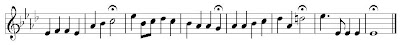
This
tune, once paired with the hymn "When the day of toil is done,"
has a restful, soothing, upward-reaching sound. It also has some
tricky intervals, smarmy chromaticism, and a final phrase in
which the melody hovers along on the fifth of the tonic chord.
In the 19th century this last item was a stock musical gesture
for peace, but in today's ears it might sound monotonous and
inconclusive.
Via Dolorosa
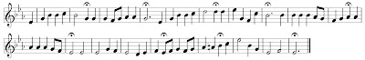
Not
to be confused with the same-named tune by C. G. Liander, this
tune has been paired with Adelaide Procter's hymn "The way is
long and dreary," in which the last three phrases of each verse
are the refrain: "O Lamb of God, who takest The sin of the world
away, Have mercy upon us!" If ever there was a hymn text
unworthy of being published and pushed on singing congregations,
it was Ms. Procter's manipulative, melodramatic doggerel. And if
ever there was a tune with a split personality, it was this tune
by Dykes, which begins with six phrases of unremarkable, but not
unpleasant, pomp and circumstance...then transforms, like Jekyll
into Hyde, into a very stupid piece of barbershop buffoonery. I
would be embarrassed to be made to sing this hymn.
Visio Domini
If
I didn't know better, I would say someone has been composing
forgeries in the name of Dykes. The mediocrity of this tune,
with or without its full accompaniment, is shocking after such
masterpieces as
Melita and
Nicaea.
But it is consistent with the text, Anna Warner's hymn "We would
see Jesus." The music actually has a fermata after these words
at the beginning of each stanza, though it falls in the middle
of a phrase. This only underscores the mushy subjectivity and
sentimental abstractions that pervade the text.
What Warner means by "seeing Jesus" is left to one's
imagination; some spiritual or symbolic vision, apparently,
since His actual presence in Word and Sacrament is never
mentioned. Part of the hymn, at least, is a renunciation of the
fleshly desires and joys that bind us to this world; but it
thereby also suggests that our future union with Jesus will be
spiritual only. Finally, it is one of those hymns that overflows
with words, but that never manages to state anything definite -
the worst that Romanticism can offer. And instead of lifting us
out of it, Dykes's music forces us to wallow in its smothering
embrace. If hymns could kill, this one would be dangerous.
Vox dilecti
Six
Lutheran hymnals favor this melody for Horatius Bonar's hymn "I
heard the voice of Jesus say." The minor/major key change at the
midpoint of the tune highlights the unique structure of the
hymn, in which each stanza begins with Jesus saying something,
and follows up with the result. Though, overall, it is a lovely
tune and incredibly dramatic, I have never felt it was in the
best of taste. More than one hymnal has offered as an
alternative the much-superior
Third Note Melody by
Thomas Tallis (a Renaissance tune made famous in the orchestral
fantasia by Vaughan Williams).
Conclusion: Like him or lump him, John
B. Dykes is here to stay. Many of his hymn tunes pervade the
culture of Anglophone Christian hymn-singing, the Lutheran
church included. Some of them are quite excellent, and I would
even advise reviving several little-known gems: solid,
objective, worshipful melodies that could serve a variety of
hymn texts. But Dykes was chameleonic. Hand him a rubbish hymn
and he would compose a rubbish tune to suit it. Beware of those
hymns, and don't let them sink their roots into the soil of our
Lutheran singing heritage!


.jpg)


![<< <<
\new Staff { \clef treble \time 4/2 \key d \major \set Staff.midiInstrument = "church organ" \omit Staff.TimeSignature \set Score.tempoHideNote = ##t \override Score.BarNumber #'transparent = ##t
\relative c'
<< { d2 d fis fis | a1 a | b1 b2 b | a1 fis \bar"||"
a2. a4 a2 a2 | d1 cis2 a | e a b2. a4 | a\breve \bar"||"
d,2 d fis fis | a1 a | b2. b4 b2 b | a1 a | \bar"||"
d1 a2 a | b1 fis | g2 e e2. d4 | d\breve \bar"|." } \\
{ a2 a d d | cis( e) d( cis) | b( cis) d e | fis1 d |
e2 e fis e | d( e) e fis | e cis d2. cis4 | cis\breve |
a2 a d d | cis( e) d( cis) | b( cis) d e | fis1 d |
d1 d2 d | d1 d2( c) | b b cis2. d4 | d\breve } >>
}
\new Lyrics \lyricmode {
}
\new Staff { \clef bass \key d \major \set Staff.midiInstrument = "church organ" \omit Staff.TimeSignature
\relative c
<< { fis2 fis d d | e( g) fis( a) | g( a) b cis | d( a) a1 |
a2 a a a | fis( gis) a a | cis a gis2. a4 | a1( g!) |
fis2 fis d d | e( g) fis( a) | g a b cis | d( a) fis1 |
fis2( g) a c | b1 a | g2 g g2. fis4 | fis\breve } \\
{ d2 d b b | a1 d | g, g'2 g | d1 d |
cis2 cis d cis | b1 cis2 d | e e e2. a,4 | a\breve |
d2 d b b | a1 d | g,2. g4 g'2 g | d1 d |
b fis2 fis | g1 d' | g,2 g a2. d4 | d\breve } >>
}
>> >>
\layout { indent = #0 }
\midi { \tempo 2 = 90 }](https://upload.wikimedia.org/score/m/v/mvghby9fnnw3098iqrcy0a4sv03l2af/mvghby9f.png)
![<< <<
\new Staff { \clef treble \time 4/2 \key d \major \set Staff.midiInstrument = "church organ" \omit Staff.TimeSignature \set Score.tempoHideNote = ##t \override Score.BarNumber #'transparent = ##t
\relative c'
<< { d2 d fis fis | a1 a | b1 b2 b | a1 fis \bar"||"
a2. a4 a2 a2 | d1 cis2 a | e a b2. a4 | a\breve \bar"||"
d,2 d fis fis | a1 a | b2. b4 b2 b | a1 a | \bar"||"
d1 a2 a | b1 fis | g2 e e2. d4 | d\breve \bar"|." } \\
{ a2 a d d | cis( e) d( cis) | b( cis) d e | fis1 d |
e2 e fis e | d( e) e fis | e cis d2. cis4 | cis\breve |
a2 a d d | cis( e) d( cis) | b( cis) d e | fis1 d |
d1 d2 d | d1 d2( c) | b b cis2. d4 | d\breve } >>
}
\new Lyrics \lyricmode {
}
\new Staff { \clef bass \key d \major \set Staff.midiInstrument = "church organ" \omit Staff.TimeSignature
\relative c
<< { fis2 fis d d | e( g) fis( a) | g( a) b cis | d( a) a1 |
a2 a a a | fis( gis) a a | cis a gis2. a4 | a1( g!) |
fis2 fis d d | e( g) fis( a) | g a b cis | d( a) fis1 |
fis2( g) a c | b1 a | g2 g g2. fis4 | fis\breve } \\
{ d2 d b b | a1 d | g, g'2 g | d1 d |
cis2 cis d cis | b1 cis2 d | e e e2. a,4 | a\breve |
d2 d b b | a1 d | g,2. g4 g'2 g | d1 d |
b fis2 fis | g1 d' | g,2 g a2. d4 | d\breve } >>
}
>> >>
\layout { indent = #0 }
\midi { \tempo 2 = 90 }](../image_hymn/6rtzvs7n.png)
{kind=link}
{kind=link}